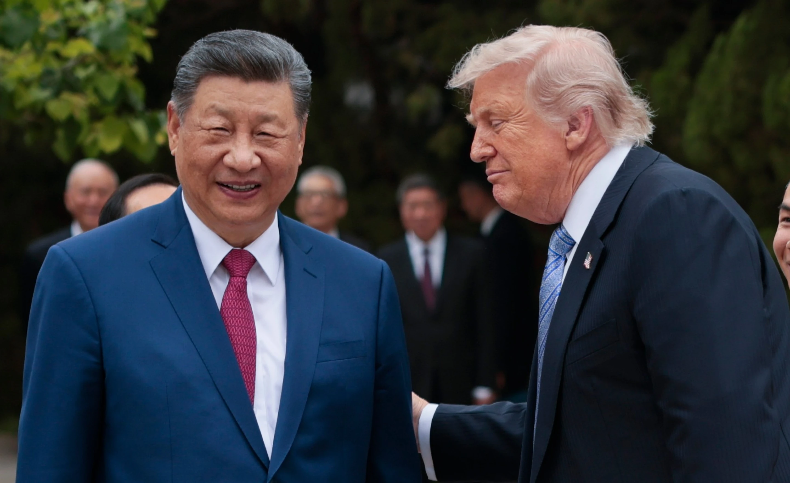

Monday, June 29, 2026
LIVE 2hrs ago
U.S. President Donald Trump, right, speaks with Chinese President Xi Jinping while leaving after a visit to the Zhongnanhai Garden in Beijing, Friday, May 15, 2026.


WASHINGTON — The White House said Sunday that China has agreed to buy more U.S. farm products, including beef and poultry, two days after President Donald Trump returned from a high-stakes summit in Beijing, where he sought to ease the impact on American farmers from the trade war he launched last year. China will buy at an annualized rate of $17 billion a year in 2026 and at that level in 2027 and 2028, the White House said.
China would also lift restrictions on U.S. beef access to the country, and resume imports of U.S. poultry from U.S. states deemed free of bird flu by the U.S. Department of Agriculture, the White House said. The deals add to China’s soybean buying pledges last year.
The deals provide some relief to American farmers hurt by the trade conflict as a key export market for soybeans and other items dried up. Farmers are now under additional pressure from Trump administration policies. The U.S.- and Israel-launched war against Iran has curbed shipping through the crucial trade corridor Strait of Hormuz, restricting global fertilizer supply and sending those prices skyrocketing.
Beijing has no immediate comment on the terms.
On Saturday, China's Ministry of Commerce stated the two sides would "resolve or make substantial progress towards resolving certain non-tariff barriers and market access issues" for agricultural products.
The U.S. side will "actively work" to address China's concern over detention of its dairy products, seafood, export of potted bonsai and recognition of Shandong province as a bird-flu-free zone, while the Chinese side will "likewise actively work" to address U.S. concerns over registration of beef processing facilities and export of poultry meat from certain states to China, a ministry spokesperson said.
The two sides also agreed to enhance commerce including farm goods by such steps as reciprocal tariff cuts on “a specific range of products,” but the products were not identified by the spokeswoman.
China, which has always linked food security to national security, has diversified its sources of imported soybeans, beef and other farm goods and has increasingly turned to Brazil, Argentina and other countries instead of the U.S. US trade war drastically cuts imports
U.S. exports of agricultural goods to China peaked at $38 billion in 2022 but have since fallen to $8 billion in 2025, according to data from the U.S. Department of Agriculture. That includes approximately $18 billion in soybean purchases in 2022 and $3 billion in 2025.
It's not immediately apparent how much more China would buy from American soybean farmers, who were especially badly hit in the trade conflict. China, historically the biggest foreign importer of American soybeans, halted its purchases entirely last year after Trump imposed tariffs on Chinese imports.
The new agreement is a byproduct of a trade truce Trump established with Chinese President Xi Jinping in October in which China agreed to buy U.S. soybeans again. At the time, the White House said China had agreed to acquire 12 million metric tons in the current marketing year and 25 million metric tons for each of the next three years.
The White House said hundreds of U.S. beef plants including Tyson and Cargill also will be able to ship again to China but it’s not immediately known how much meat American corporations will sell to China.
USDA data shows that China allowed the licenses for hundreds of U.S. beef facilities to lapse last year, and the value of imports in 2025 dropped to less than $500 million. China’s purchases of U.S. beef hit a high of $2.14 billion in 2022, according to government data.
U.S. exports of poultry meats and products to China were $286 million in 2025, down from more than $1 billion in 2022.
Trump and Xi discover opportunities for economic cooperation during summit The White House had said Trump and Xi discussed measures to boost economic cooperation at the summit last week, including boosting market access for American businesses in China and growing Chinese investment into U.S. industries. The two presidents agreed to establish separate boards of trade and investment, but offered few details on the ideas or how they would vary from existing trade forums.
The Board of Trade, the White House said, would enable the two governments to deal with trade in "non-sensitive goods,” while the Board of Investments would give a forum for the two sides to debate matters relating to investment.
China’s Ministry of Commerce said the two sides would address different issues on trade and investment. The ministry said the Board of Trade will give the two parties a forum to address matters such as tariff reductions on individual products. The official said: “In principle, both sides agreed to cut tariff on products of respective concern at equivalent scale.
China’s door of opportunity would open wider, Xi told U.S. business leaders joining Trump on the trip last week. That includes Brian Sikes, chief executive officer of agribusiness giant Cargill, who traveled to Beijing.
Soybeans are an important agricultural commodity for the United States and are used for livestock feed and biofuels in China. Soybean shipments to China used to account for approximately half of U.S. agricultural exports to the Asian nation.
USDA records indicate the US has shipped 10.9 million metric tons of soybeans to China through May 7, setting China up to meet its earlier pledge by the end of the marketing year on Aug. 31. That is much less than the 25 million to 30 million metric tons China bought in previous years.
The American Soybean Association pushed Trump to put soybeans foremost in trade talks with Xi before Trump’s originally scheduled trip to Beijing in late March, which was postponed due to the Iran war.
The association’s president, Scott Metzger, said Thursday the group wants to see “additional soybean purchases this marketing year, as well as continued progress toward fulfilling future purchase commitments.”
“Farmers want certainty when making decisions for the year ahead, and more certainty and consistency in the marketplace helps provide that,” he said.